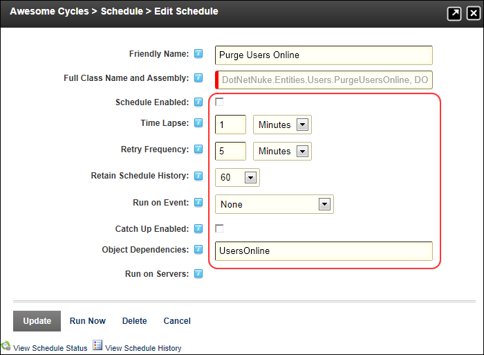

Editing a Task
How to edit the settings of a task on the Schedule module.
- Navigate to Host > Advanced Settings >
 Schedule.
Schedule.
- Click the Edit
 button beside the task to be edited.
button beside the task to be edited.
- Modify one or more fields as required. See "Adding a Task"

-
Click the Update button.